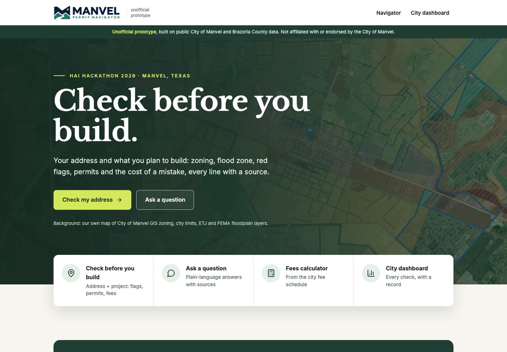
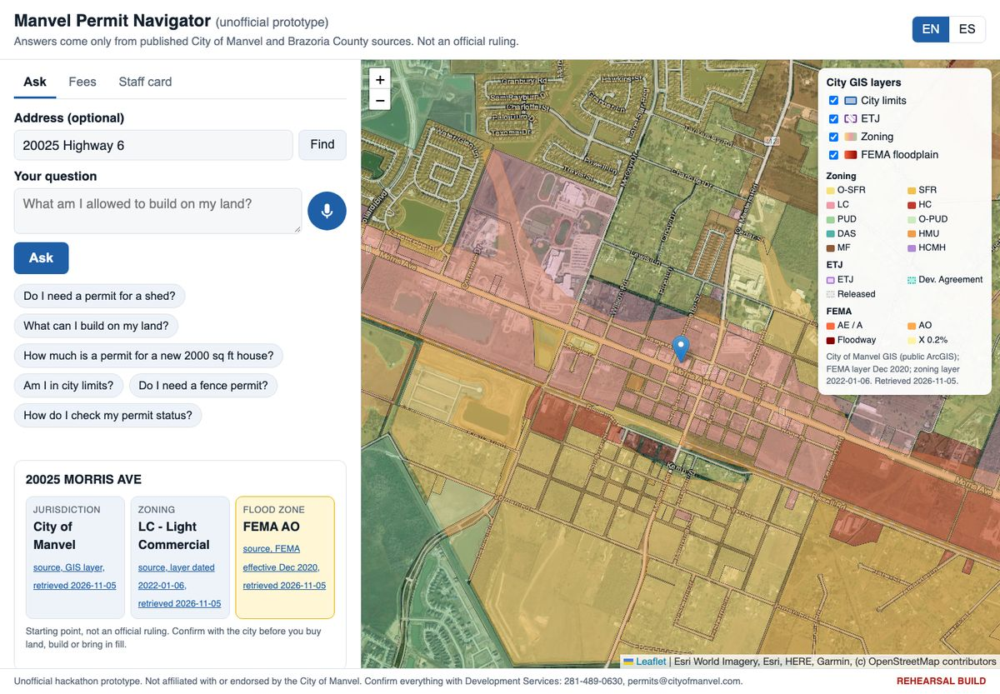
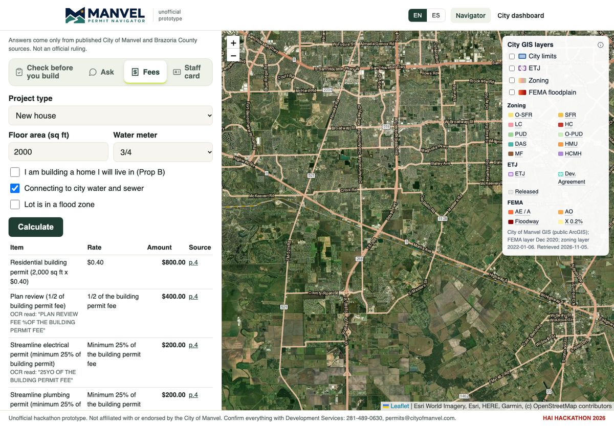
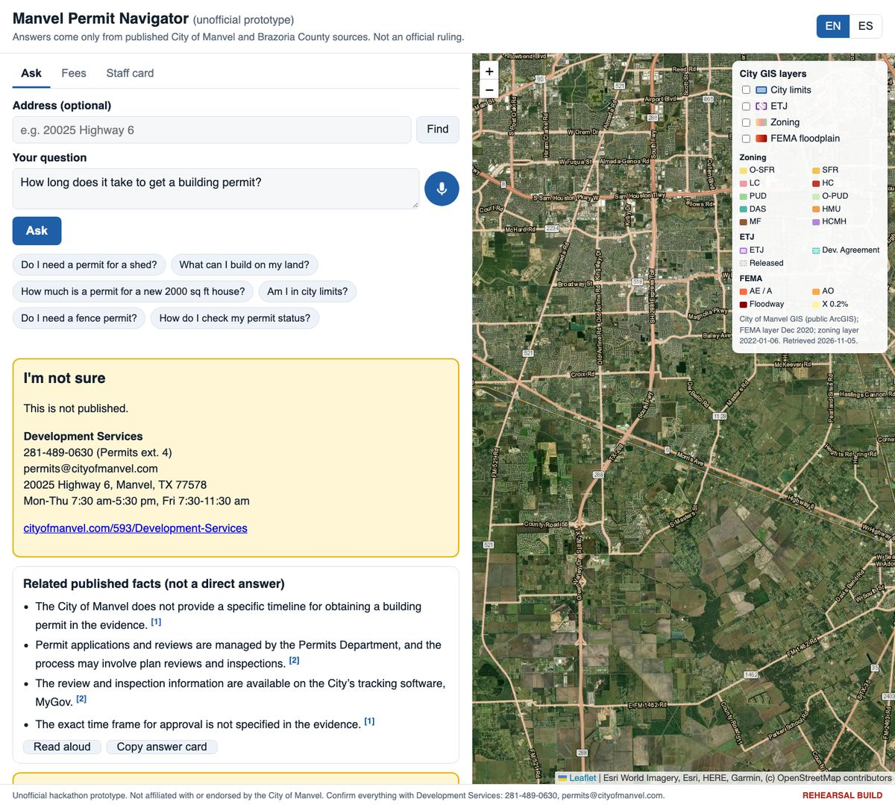
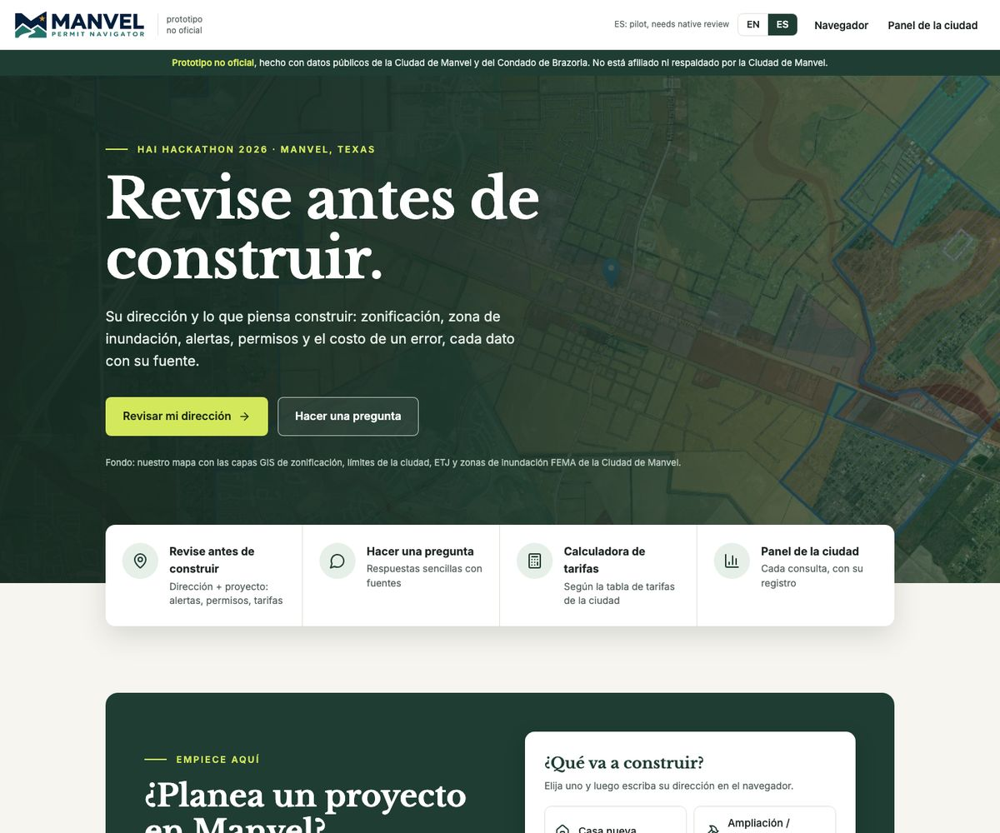

1 / 5 · swipe for more
Team 5 · Track 3 · Permitting & Ordinance Assistant (City of Manvel challenge)
Manvel Permit Navigator
A plain-language assistant for Manvel residents and builders. It answers property and permit questions using only the City's and Brazoria County's published information, and every answer links the ordinance, fee row or form it came from.
- Type an address to see whether it's inside Manvel city limits, the ETJ or the county, with its zoning and FEMA flood zone from the City's public GIS layers.
- A permit fee calculator built only from the City fee schedule, with every line citing its source.
- Says "not sure" and points to Development Services when there's no standard answer, such as a PUD or a development agreement.
- Works in English and Spanish.
Team: Asena, Azamat, Mahmoud, Muhammad
See the slides (PDF), 0.6 MB, opens in a new tab
A student prototype built for a City of Manvel challenge. The City has not reviewed or approved it, and its fees and rules may be out of date. Confirm with Manvel Development Services before you apply. The live demo and code are not public yet.